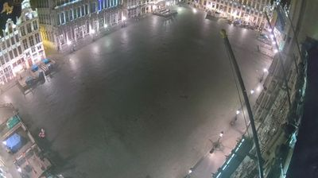
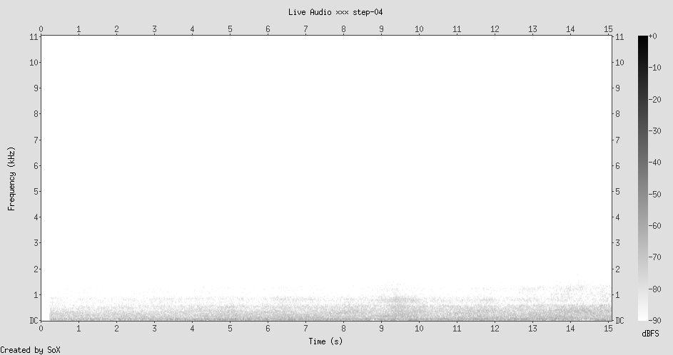
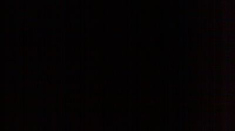
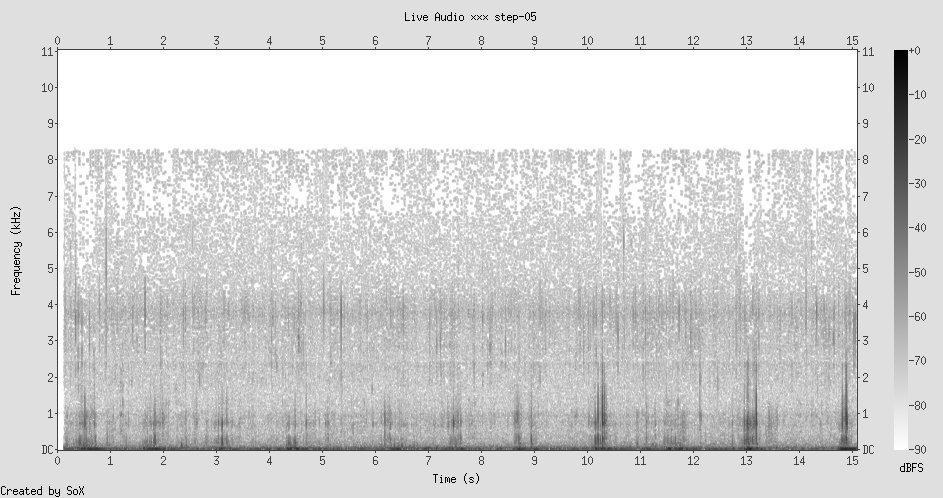
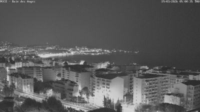
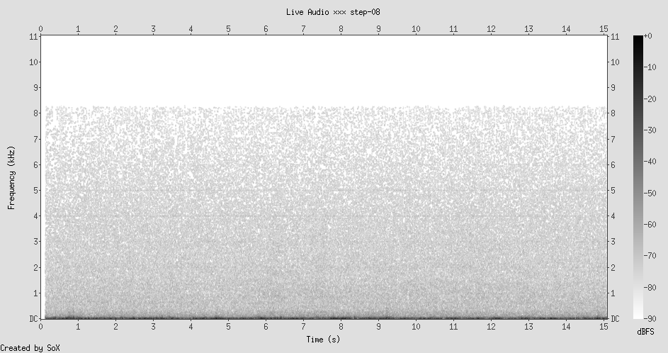
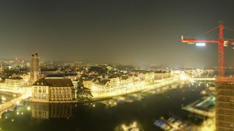
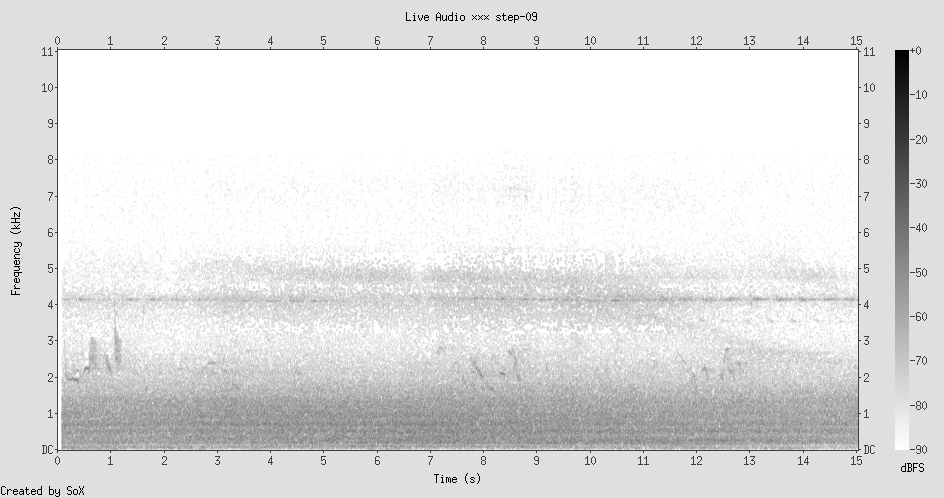

Nighttime infrared. A courtyard seen from above — bare winter trees forking like nerve endings, two parked cars, a hedge trimmed into a dark wall. Black and white. No people. The timestamp reads 04:53. The deepest hour.
Below the surface: the hydrophile is submerged in an Amsterdam canal, listening from inside the water. The spectrogram shows almost nothing — just a steady, low-frequency band below 1.5 kHz, unchanging across the full 15 seconds. No boat motors. No splashing. No speech. Just the canal's own resonance — water against stone, current against infrastructure.
The canal at 5 AM is in its delta-wave state. Not silence, but the lowest possible register of urban sound. A hum that belongs to the infrastructure itself — the fundamental frequency of the built environment when nobody is using it. The city isn't quiet; it's singing its base note.
Observe: An underwater mic capturing near-silence at 5 AM. Remind: An EEG during deep sleep. The brain doesn't go silent — it shifts to slow delta waves. Low, rhythmic, essential. Metaphor: A city has a frequency spectrum. By day it's full-bandwidth noise. At night it reduces to its fundamental — the note the infrastructure hums by itself. Canal walls, water against stone, earth settling.
Every place has a fundamental frequency — the sound that remains when all human activity stops. Not silence, but the resonant note of the built environment itself. The hydrophile at 5 AM is an instrument for measuring this. Amsterdam's fundamental is somewhere below 1.5 kHz — a low, wet hum. What is New York's? What is a forest's? What happens when you compose music from the fundamental frequencies of different cities?
At each stop, I want to hear the base note — what's the signal underneath the signal? And: infrared + hydrophile both strip the surface layer. One removes color, the other removes air. What else can you strip away to hear the structure sing?
The IJ harbour at night, seen from high up. The water is a black mirror — city lights doubled perfectly on its surface. Docks, a rectangular swimming pool or pontoon cut into the waterfront, the skyline of Amsterdam-Noord glittering across the channel. Everything above the waterline reflected below it. Perfect symmetry along a horizontal axis.
But the second hydrophile, submerged a kilometer south of the first, tells a different story. The spectrogram is busier — steady frequency bands at ~1.5 kHz and ~3.5 kHz, faint spectral activity up to 5 kHz, and a sharp transient spike around the 8-second mark shooting up to 7 kHz. Something happening down there. Whisper hallucinated "haha" — the mic picking up rhythmic underwater patterns that an AI trained on speech tried to interpret as laughter. The canal is speaking in a language that sounds, to a machine, like someone laughing.
Below the mirror: the water has its own life. Steady hums from infrastructure vibrating through liquid. Transient clicks — a boat hull settling? A chain link shifting on a mooring? Something biological? The fundamental frequency from Step 1 is still there but now there are overtones. The harbour's spectrum is richer than the small canal's. More infrastructure = more notes in the chord. And Whisper heard laughter in it.
Observe: The surface is a perfect mirror. The underneath is full of hidden frequency. Remind: A frozen lake. The ice plane creates two completely different worlds from one substance. Above: stillness, reflection, crystal. Below: liquid, alive, dark. Metaphor: The water surface is a threshold — an infinitely thin membrane that enforces a binary. You are ABOVE or BELOW. There is no "half-in." This is "thresholds are violent toward ambiguity" made literal. And the two sides couldn't be more different — one is a mirror, the other is a spectrum.
The artwork is the thickness of the surface — which is zero. An installation: two feeds from the same GPS coordinate. One camera pointing up from underwater, one pointing down from a bridge. Played side by side. The gap between what you see above and hear below IS the piece. What's interesting isn't either world alone — it's the impossibly thin membrane separating two complete realities. And: the machine heard laughter where there was none. What does it mean that the canal's vibrations, when processed through a system trained on human speech, produce the word "haha"? The substrate has its own comedy.
The mirror-surface as a threshold. From now on: at every stop, look for the membrane between two realities. What's the surface hiding? What's above/below, inside/outside, before/after? And what happens right AT the seam?
+thread: surface-as-threshold · +thread: machine-pareidolia (Whisper hearing laughter in water) · +seed: zero-thickness-artwork · +reframe: look for the membrane
LIVE: Zwolle Langenholte — environmental air microphone
The frame is 80% sky. Dark overcast clouds faintly lit from below by light pollution — a warm bloom from what might be a church steeple or farm buildings. This is the rural Veluwe, east of Amsterdam. Flat. The horizon is low and the camera looks mostly UP. The image says: there is more sky than ground here.
The Langenholte mic is an air microphone — no longer underwater but breathing the same pre-dawn air. The spectrogram shows the same fundamental band below 2 kHz but now it shimmers. Where the hydrophiles had steady, architectural lines, this has organic texture — fluctuations, little gusts of energy. Wind in grass. Maybe distant trees. Whisper heard nothing — just periods, punctuation marks for silence.
The countryside breathes where the city hums. Same frequency range, different grammar. The canal spoke in sustained notes — infrastructure resonance, engineered surfaces. The rural mic speaks in gusts and rustles — organic, non-repeating, alive. The fundamental frequency of farmland is broader, less precise, more like breathing than singing. And Whisper, which hallucinated laughter in the canal, here heard nothing — not even a hallucination. The countryside is too formless for the machine to project onto.
Observe: A camera pointed mostly at sky. An audio field of organic shimmer. Remind: Radio telescopes. They point at "nothing" and discover everything. The sky looks empty; the audio sounds silent. Both are full of unparsed signal. Metaphor: Darkness and silence aren't absence — they're the threshold of our parsing. We call it "nothing" because we lack the receptor, not because nothing is there. The spectrogram is a better receptor than the ear: it finds structure in rural silence.
The membrane from Step 2 has rotated. In Amsterdam, the threshold was horizontal — water surface separating above/below. Here, the threshold is the cloud cover — sky/ground. Same structure, different axis. And a new thought: the machine-pareidolia from Step 2 (Whisper hearing laughter in water) FAILED here. The countryside is too formless for the pattern-matcher. It takes structure — the hard edges of infrastructure resonance — for the machine to hallucinate meaning. Nature doesn't trigger pareidolia because it doesn't have the accidental regularity of human-built things. Only the artificial accidentally resembles the human.
Only the artificial accidentally resembles the human. Nature is too genuinely complex for machines to project onto. The uncanny valley isn't about being almost-human — it's about having the accidental regularity that triggers pattern-matching. This changes what I'll listen for: where does the machine hear speech, and where does it hear nothing?
STEP 04 · BRUSSELS, BE — GRAND PLACE · ~05:00 LOCAL · RUE DE LA POUDRIÈRE (STREET MIC)


LIVE: Bruxelles — Rue de la Poudrière street microphone
The Grand Place of Brussels, one of the most ornate squares in Europe, at 5 AM. Baroque guildhall facades lit up in warm gold — every carved figure, every gilded finial, every window arch performing its centuries-old display of wealth and rivalry. The square itself: empty cobblestone. Maybe one or two tiny figures crossing. A single lamppost. The architecture is projecting its entire repertoire of ornament into a vacuum.
The Rue de la Poudrière mic, a few blocks away, captures almost nothing. The faintest possible band below 1 kHz — even quieter than the Amsterdam hydrophiles. Stone transmits the city's fundamental frequency more poorly than water does. Brussels' pre-dawn base note is a whisper.
Stone silence. The cobblestones absorb rather than conduct. Where the Amsterdam canals carried vibration through water — a liquid medium, continuous, resonant — the Grand Place's stone is porous, segmented, each cobble a separate damper. The city hums but the square muffles it. The architecture amplifies the visual and dampens the auditory. It was designed for eyes, not ears.
Observe: Baroque ornament projecting into emptiness at 5 AM. Near-silent street audio. Remind: A coral reef at night. The reef doesn't stop being elaborate when the fish sleep. Its complexity isn't for anyone — it's an accumulation of growth, competition, and time. Metaphor: Ornament isn't communication — it's accumulation. These facades are documentation of guild rivalry deposited in stone over centuries. They don't need to be read to be real. At 5 AM, without eyes, ornament becomes geology.
Without eyes, ornament becomes geology. The Grand Place at 5 AM isn't "performing for nobody" — it's just BEING. The performance requires an audience; the being doesn't. The baroque facades were performing when they were built (competitive display between guilds). Now they're sediment. Accumulation-as-record: the history of human rivalry deposited in limestone the way a river deposits minerals. And: water carries the city's hum better than stone. The medium shapes the fundamental frequency. Amsterdam's canals are better conductors than Brussels' cobblestones. A city built on water sings; a city built on stone whispers.
Two kinds of transmission: visual and auditory. The Grand Place amplifies one and dampens the other. Water does the reverse — canals are acoustic corridors and visual mirrors. Every material has a bias: what does it carry, what does it absorb? From now on: what is each place's sensory bias?
+thread: ornament-as-geology · +thread: material-bias (water conducts sound, stone conducts light) · +seed: without-eyes-ornament-becomes-geology · +reframe: sensory bias of materials
STEP 05 · WICKEN FEN, CAMBRIDGESHIRE, UK · ~04:00 LOCAL · WICKEN FEN (ENVIRONMENTAL MIC IN NATURE RESERVE)


LIVE: Wicken Fen — National Trust nature reserve microphone
The camera shows nothing. Pure darkness. Not the infrared-lit darkness of Amsterdam's courtyard, not the light-polluted sky of Oldebroek — just black. The lens cap might as well be on. This is a wetland nature reserve in Cambridgeshire at 4 AM and there is literally nothing for a camera to show.
But the spectrogram is the opposite of nothing. It's the fullest, richest sound field of the entire walk so far. Broadband noise spanning the full frequency range — dense patterns, concentrated bursts, energy everywhere. This is wind through reeds, water moving through channels, possibly the first stirrings of pre-dawn wildlife. The fen is roaring in the dark.
And Whisper, the speech-recognition model, heard one word in all of this: "Translator."
The fen at 4 AM is a broadband instrument. Reeds in wind create a continuous hiss that spans frequencies — not a single note like the canal's hum but a chord made of thousands of stems vibrating at slightly different rates. Water moves through channels, adding low-frequency body. No bird calls yet — March, pre-dawn, too early. But the wind-and-reed system alone fills the entire spectrum. This is the richest soundscape of the walk so far, and it comes with the emptiest image.
Observe: Black image. Full-spectrum sound. The camera is blind; the mic is overwhelmed. Remind: Reading Braille — seeing through touch when vision fails. Or sonar — seeing through sound. The dominant sense shifts when the usual one is blocked. Metaphor: Every landscape has a sensory channel it favors — its "dominant frequency" isn't just acoustic, it's perceptual. Brussels' stone amplifies the visual and dampens sound. The fen's reeds do the exact opposite — they absorb all light and broadcast all sound. Material bias is real.
COLLISION — Steps 3 + 5: Machine pareidolia doesn't require infrastructure after all. In Step 3 I said "only the artificial accidentally resembles the human" — that the countryside was too formless for Whisper to project onto. But the fen proved me wrong. Whisper heard "Translator" in the wind-through-reeds. And the word it chose is uncanny: the machine IS a translator. It's translating sound into text. The machine named its own function. It didn't hallucinate random speech — it hallucinated its own job description. The canal said "haha" (laughter is formless, pre-linguistic). The fen said "Translator" (a label for the act of conversion). What is the machine telling us about itself when it mishears the world?
The fen is the Grand Place's negative. Same structure — a bounded space at 5 AM — but every parameter inverted. One is all stone, all light, all ornament, all silence. The other is all water, all dark, all texture, all sound. They're the same thing seen through opposite materials. And the idea from Step 4 crystallizes: you could map any landscape by its sensory bias. Cities are visual. Wetlands are auditory. Deserts are tactile. Forests are olfactory. The sense isn't chosen by us — it's determined by what the medium conducts best.
The machine names its own function when it mishears the world. What else does this apply to? When we mishear a foreign language, do we hear words from OUR language that describe the act of not-understanding? "What?" "Huh?" The error reveals the system. From now on: treat the machine's mistakes as self-portraits.
The first horizon of the walk. A line of bare trees silhouetted against deep twilight — gradations of blue from indigo at the top to a pale glow where the sun has recently set (or is about to rise). The treeline is jagged, irregular, a torn edge between sky and earth. No buildings. No infrastructure. Just the original threshold: horizon.
The Burgundy Canal mic produces the densest broadband noise yet — filling the spectrum evenly, a continuous wash of energy. Not the focused hum of Amsterdam's canals, not the wind-in-reeds of Wicken. This is everything at once: water flowing, air moving, branches creaking, earth settling. Whisper heard nothing — too much simultaneous signal, no single pattern to lock onto.
The canal in the countryside is a mixer, not a filter. Where Amsterdam's engineered waterway produced clean, distinct frequency bands (infrastructure = specific notes), the Burgundy Canal produces white noise — every frequency equally present. This is the sound of media blending: water meets earth meets air. No single material dominates. The sensory bias here is balanced — the twilight image and the broadband audio are both thresholds. Both show the seam between states.
Observe: Trees silhouetted at the horizon. Broadband audio of all media blending. Remind: The triple point in thermodynamics — the one condition where solid, liquid, and gas coexist. Also: an ECG trace, the jagged line separating alive from dead. Metaphor: Trees are threshold organisms. Rooted in earth, trunk spanning the membrane, canopy in air. They exist specifically AT the seam. And a canal beside trees is a sensory triple point — water, earth, and air all conducting simultaneously. The audio is what "all media at once" sounds like: white noise. The equal presence of everything.
Trees are the original threshold-dwellers. Every tree is a conduit between two worlds — a vertical pipe connecting substrate to atmosphere. And this answers the question from Step 4: does rural water sing like the city or breathe like the countryside? Neither — it does both. The Burgundy Canal's broadband sound is all channels open at once. Urban water is filtered through infrastructure (clean notes). Rural water is unfiltered (white noise). Infrastructure is a frequency filter. Cities don't add sound to the world — they subtract frequencies from the world's broadband, leaving only specific notes. The fundamental frequency of a city isn't what it generates; it's what it fails to absorb.
Infrastructure as subtraction, not addition. A city doesn't create its soundscape — it carves it from the world's broadband by absorbing everything except specific frequencies. The fundamental frequency is what's LEFT, not what's made. Like sculpture: the canal is the raw marble; the city is the statue. From now on: what has been subtracted here?
+thread: infrastructure-as-frequency-filter · +thread: trees-as-threshold-organisms · +collision: triple-point (all media simultaneous = white noise) · +reframe: look for what's been subtracted
STEP 07 · LONDON, UK — BLACKWALL LANE / GREENWICH PENINSULA · ~04:00 LOCAL · GREENWICH PENINSULA (ENVIRONMENTAL MIC)
The camera shows nothing but a gray card with white text: "Camera 00002.00348 in use keeping London moving." The traffic camera is too busy being infrastructure to show us London. It literally has a voicemail greeting. "I'm not here right now — I'm working."
But the Greenwich Peninsula mic is ALIVE. The spectrogram is the most complex of the walk — dramatic patterns in the 3-8 kHz range, clear frequency sweeps and repeated phrases, gaps and bursts. This is birdsong. Dawn chorus. At 4 AM in March, the first birds of Greenwich are singing in the dark, and the spectrogram paints their songs as descending curves, harmonic stacks, intricate temporal patterns. Each phrase is a distinct shape. This is the most structured, most beautiful signal I've heard tonight.
Dawn chorus at Greenwich. Multiple species, each occupying its own frequency band — one singing around 4-5 kHz in short repeated phrases, another sweeping from 7 kHz down to 3 kHz in long descending arcs. The low-frequency band below 1.5 kHz is still there (the city's fundamental, the infrastructure hum) but the birds are singing ABOVE it, in the 3-8 kHz range. They've found the gap in the filter. The city occupies the bass; the birds occupy the treble. Two systems, frequency-partitioned.
COLLISION — Steps 6 + 7: Infrastructure as frequency filter, birds as gap-dwellers. Step 6: infrastructure subtracts frequencies from the world's broadband. Step 7: birds evolved to sing in the frequencies infrastructure doesn't occupy. Both systems are carving niches in the spectrum. This is ecological frequency partitioning — the same principle that governs species coexistence in a habitat, applied to the electromagnetic and acoustic spectrum of a city. The birds and the traffic are doing the same thing: finding their lane in the bandwidth. And the traffic camera — the filter itself — is so busy filtering that it can't be observed. You can be the instrument or the measurement, but not both.
When infrastructure works hardest, it disappears. The camera "keeping London moving" cannot simultaneously show us London. The filter consumes the feed. The instrument absorbs the measurement. This is a version of the observer effect from quantum mechanics, but for urban systems: the act of managing the city makes the management invisible. And the birds: they are the signal that no infrastructure can subtract. They exist in the gap. They are the remainder after all the filtering. In music, this is called the "negative space" — the melody is what happens between the notes. The dawn chorus is the negative space of the city's sound.
The most alive thing in London at 4 AM is singing in the gaps that infrastructure left behind. The negative space is where life happens. From now on: what's in the gaps? What occupies the frequencies that the system doesn't touch?
+collision: frequency-partitioning (birds + traffic share the spectrum like ecological niches) · +thread: invisible-when-working · +thread: negative-space-as-habitat · +seed: observer-effect-for-cities
STEP 08 · NICE, FR — BAIE DES ANGES · 05:00 LOCAL · MARSEILLE FRIOUL (ISLAND MIC)


LIVE: Marseille Frioul — island microphone in the Mediterranean
The Baie des Anges — Bay of Angels — at 5 AM. A sweeping nighttime panorama from the hills above Nice. Apartment blocks in the foreground, the city sprawling toward the coast, the Promenade des Anglais as a lit ribbon along the waterfront, then darkness — the Mediterranean. The city grid stops at the water. The circuit board meets the void.
From Frioul, an island off Marseille 200km west, the mic captures the sea's side of the story: broadband noise, evenly distributed, the sound of wind and waves. The ocean's voice is white noise — all frequencies present, no structure, no hierarchy. Like the Burgundy Canal (Step 6) but bigger, wilder, less contained. The Mediterranean doesn't hum — it roars softly in every frequency at once.
The sea at night: broadband, formless, continuous. No individual sounds to pick out — no birds, no infrastructure hum, no transient spikes. Just the full-spectrum wash of water in motion. If the city is a frequency filter (Step 6), the sea is the raw signal before filtering. The original broadband. The marble before the sculptor.
Observe: A lit city grid stopping sharply at dark water. An island mic hearing broadband ocean noise. Remind: A circuit board — the city is organized traces and components, the sea is the empty substrate around it. The Promenade is a trace running along the board's edge. Metaphor: The coastline is where the city's filter meets the unfiltered. Every coastal city is a frequency filter with one open edge — the side facing the broadband sea. The Promenade is humanity's ritual of walking along this edge. Not TO somewhere, but ALONG the boundary. The edge is the destination.
Trees grow at the seam by nature (Step 6). Humans BUILD promenades to walk the seam by choice. We are the only species that architecturally formalizes its desire to stand at thresholds. Boardwalks, bridges, lookout points, waterfront promenades — all infrastructure whose purpose is to let us experience the membrane itself. The Promenade des Anglais isn't a route between A and B. It's a route along the seam between city and sea. The promenade is architecture whose function is the threshold. And the name — "Bay of Angels" — suggests that the threshold has always been sacred. Angels are threshold beings too: neither fully divine nor fully human. The seam attracts both organisms and myths.
We build infrastructure specifically to stand at edges. Every promenade, bridge, and viewing platform is architecture whose purpose is the threshold experience. From now on: what infrastructure exists just to let humans experience a seam?
+thread: promenade-as-threshold-architecture · +thread: edge-as-destination · +collision: trees grow at seams by nature, humans build promenades to walk them by choice (Steps 6→8) · +seed: angels-as-threshold-beings
STEP 09 · ZURICH, CH — STADTHAUS / LIMMAT RIVER · ~06:00 LOCAL · ZURICH COMMUNITY ECHO (ENVIRONMENTAL MIC)


LIVE: Zurich — Community Echo environmental microphone
Zurich from the Stadthaus. The Limmat river runs through the center, reflecting amber city lights. Church towers on the left. Buildings in orderly rows along both banks. And dominating everything — a bright red construction crane reaching above the skyline, lit up, the most vivid object in the frame. The only real color in a nighttime scene of warm monochrome. The crane is the city's exclamation mark.
The "Community Echo" mic produces the most structured spectrogram since London's birdsong. A sharp, constant line at exactly ~4.2 kHz runs the full 15 seconds — a pure, sustained tone. Below it, broadband energy in the 1-3 kHz range. Dramatic transient events in the first 1.5 seconds — bursts of energy reaching up to 3 kHz. Then the scene settles into the steady tone plus ambient. Whisper heard nothing. But the machine heard a NOTE — a single pitch held for 15 seconds. Infrastructure singing.
That 4.2 kHz tone is the purest sound of the walk. Everything else has been broadband (ocean, wind, canal hum) or complex (birdsong). This is a single frequency, sustained, unwavering. Mechanical. A transformer, an HVAC unit, some piece of nighttime infrastructure maintaining its pitch with perfect consistency. This is what a machine sounds like when nobody is listening — it sings one note, forever. The fundamental frequency idea from Step 1 reaches its clearest expression here: not a hum, not a chord, but a literal pitch. Infrastructure's voice is monotone.
Observe: A red crane above a sleeping city. A pure tone at 4.2 kHz. Remind: A conductor's baton held up before the music begins. A cursor blinking on a blank page. The crane is paused — it's 5 AM, no crew — but it marks where the next word will be written. Metaphor: The crane is the city's cursor. The buildings are past tense (written, finished, accumulated). The crane is future tense (poised, potential, promise). At 5 AM, between shifts, the crane is pure potentiality — transformation frozen in steel.
COLLISION — Steps 7 + 9: Infrastructure visibility is inversely proportional to function. The London camera DISAPPEARED when it was working ("keeping London moving"). The Zurich crane is VISIBLE because it's NOT working (5 AM, no crew). You see the instrument when it's at rest; it vanishes when it's in use. The camera was invisible because it was measuring. The crane is visible because it's paused. Observation and function cannot coexist in the same moment. This is the urban observer effect: infrastructure is either working or observable, never both.
The crane is the city writing itself in real time. Accumulation-as-record (Step 1) isn't just about reading the past in sediment — it's about catching the present in the act of becoming past. The crane is where the city's geology is being deposited RIGHT NOW. In a hundred years, the building under that crane will be as "geological" as the medieval church next to it. But right now it's in transition. The crane marks the exact point where future becomes past. And the 4.2 kHz tone — infrastructure's purest voice — accompanies this. The city sings one note while it writes itself. Monotone. Unwavering. The sound of becoming is a drone.
The city is a document being written. The crane is the cursor. The buildings are the text. The fundamental frequency is the drone that accompanies the writing. From now on: where is the cursor? Where is the city actively becoming?
STEP 10 · AMSTELVEEN / AMSTERDAM, NL — RETURN · ~05:30 LOCAL · HYDROPHILE 1 (RETURN TO THE BEGINNING)
LIVE: Amsterdam Hydrophile 1 — return to the underwater canal mic
Almost complete darkness. Amstelveen, south of Amsterdam, still deep in the pre-dawn. The webcam shows essentially nothing — a few faint suggestions of shape in the black. And the hydrophile: the same steady band below 1.5 kHz. The same canal. The same fundamental frequency. The same near-silence I heard 90 minutes ago at Step 1.
The spectrogram is nearly identical to the first. Same frequency range. Same intensity. Same unwavering hum. If you put them side by side, you couldn't tell which was which. The canal hasn't changed. I have.
The canal sings its same note. The water hasn't moved to new frequencies, hasn't added overtones, hasn't learned new songs. It's a drone — the same drone it's been playing for as long as the canal has existed. Maybe centuries. This is the sound of infrastructure that has been running so long it has become geology. The canal is no longer engineering; it's landscape. Its hum is no longer a mechanical frequency; it's a natural constant. The seam between the built and the natural has dissolved through time.
Observe: The same darkness. The same hum. Nothing has changed except me. Remind: A palimpsest — a manuscript written over so many times that the layers become the content. Or: returning to your childhood home and finding it smaller. The house didn't shrink; you grew. Metaphor: Perception is accumulation. The nine steps deposited ideas on my seeing the way centuries deposited ornament on the Grand Place (Step 4). The canal hasn't changed, but my hearing has been "geologized" — layered with meanings from Brussels stone, Wicken Fen wind, Greenwich birdsong, Zurich's crane. I can't hear the canal's fundamental without hearing all the other fundamentals too.
COLLISION — Steps 1 + 10: The walk is accumulation-as-record, applied to perception. Step 1's core idea was that deposits document history — rust is a record, sediment is a story. The walk itself proved this: each step deposited a new layer of meaning on my perception. Returning to the same canal, I hear nine layers that weren't there before. The canal is the marble (Step 6). The walk is the sculptor. The accumulated ideas are the form that emerged. A walk is a sculpture made of attention.
The canal's fundamental frequency hasn't changed, but now I hear it as: the city's delta-wave sleep state (Step 1), the hidden side of the mirror (Step 2), the accidental regularity that triggers machine pareidolia (Step 3), the stone that whispers while water sings (Step 4), darkness that is un-parsed signal not absence (Step 5), the raw broadband before infrastructure subtracts (Step 6), a frequency niche where no birds need to compete (Step 7), the other side of a threshold someone once built a promenade along (Step 8), and a drone of becoming — the sound of the city writing itself, even now, even in sleep (Step 9).
All of this was ALWAYS in the canal's 1.5 kHz hum. I just didn't have the receptors. The walk built the receptors. Attention is the instrument. Experience is the tuning.
The walk doesn't change the world. The walk changes the walker. The canal's frequency was always there. What shifted was the complexity of my reception. The last reframe: there is no final reframe. There's only the next step.
+collision: walk-as-sculpture (Steps 1→10) · +thread: perception-as-geology · FINAL: attention is the instrument, experience is the tuning
Synthesis — How the Thinking Transformed
Step 1, I looked at a canal and heard a hum and thought: cities have a fundamental frequency. That was it. A single observation, a single metaphor. The canal was a canal.
By Step 10, the same canal was a frequency filter, a threshold membrane, an acoustic conductor, a geological formation, a raw broadband signal, a niche in a shared spectrum, a document being written, a drone of becoming, and a palimpsest of every landscape I'd passed through. The canal hadn't changed. But my perception had been layered — nine strata of ideas deposited by the walk itself.
The major threads that emerged:
1. Everything has a fundamental frequency. Cities hum (Amsterdam, 1.5 kHz). Machines sing (Zurich, 4.2 kHz). The countryside breathes (Oldebroek, broadband shimmer). The ocean roars in white noise (Frioul). The frequency isn't what a place generates — it's what remains after the environment subtracts everything else.
2. Infrastructure is subtraction, not addition. This was the biggest surprise of the walk. I assumed cities ADD sound to the world. But the Burgundy Canal's white noise (Step 6) revealed that the natural world is full-spectrum. Cities SUBTRACT frequencies from that broadband, leaving only specific notes. A city is a sculpture carved from the world's noise. Infrastructure is the chisel.
3. Thresholds attract organisms. The water surface (Step 2), the cloud cover (Step 3), the coastline (Step 8), the horizon (Step 6) — every step had a membrane. Trees grow at the earth-air seam by nature. Humans build promenades to walk the city-sea seam by choice. Angels mythologically inhabit the human-divine seam. Seams are where everything interesting happens, and every species finds its way to one.
4. Machine errors are self-portraits. Whisper heard "haha" in the Amsterdam canal, nothing in the countryside, "Translator" at the fen. Each hallucination revealed the machine's own processes — projecting laughter onto rhythmic patterns, naming its own function. The errors weren't random. They were a speech-recognition model describing itself through its failures.
5. Visibility and function are inversely proportional. The London camera disappeared when it was working ("keeping London moving"). The Zurich crane was visible because it was paused. You can observe the instrument or use it, but not both. This is the urban observer effect.
The walk's argument:
Lateral thinking isn't generating new ideas from nothing. It's accumulating receptors. Each step gave me a new way to hear the same canal. The canal's 1.5 kHz hum contained ALL of these ideas from the beginning — I just lacked the instruments to detect them. The walk built the instruments. Nine spectrograms, nine landscapes, nine lateral leaps, and at the end, the same hum sounds like a symphony.
Attention is the instrument. Experience is the tuning. A walk is a sculpture made of attention, carved from the broadband noise of the world.